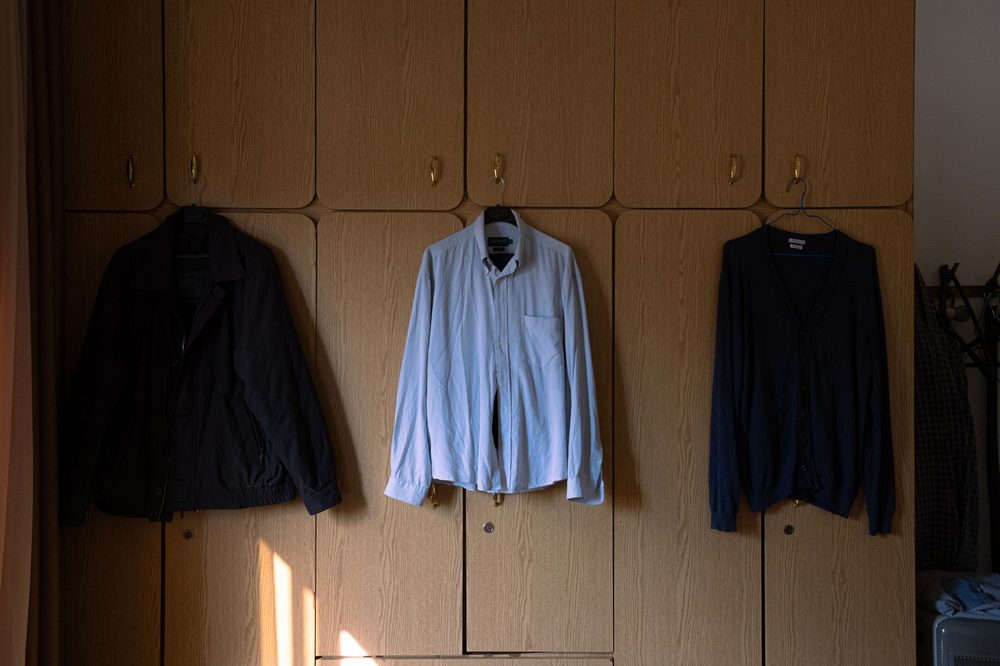
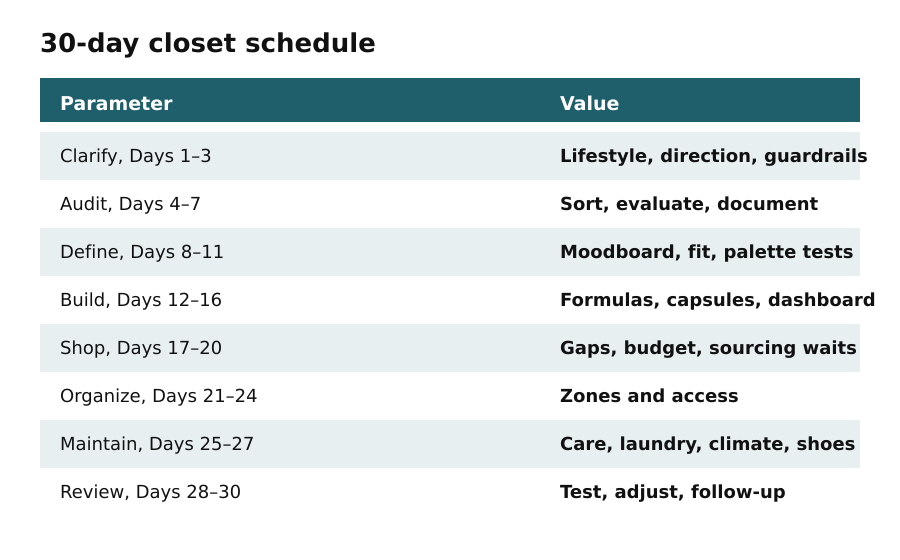

Day 1
This is a 30-day plan
In this apartment
Limited hanging space: a reader opened four chapters that each said Day 1 and did not know what to do on Day 12.
One path. Eight phases. Resume where you stopped.
Today's output: the 30-day map copied or photographed, with today's date on Day 1.

Clarify 1–3 lifestyle and guardrails. Audit 4–7 sort and document. Define 8–11 moodboard, optional color tests, fit. Build 12–16 formulas, capsules, dashboard. Shop 17–20 gaps, budget, waits. Organize 21–24 zones and access. Maintain 25–27 care, laundry, climate, shoes. Review 28–30 test, adjust, follow-up.
Later chapters do not restart the day count. Template-style repeats from older notes are replaced by the dashboard on Day 15.
Do this
- Copy the phase table
- Mark today as Day 1
- Do not skip the care chapter
Today's output
- Copy the phase table
- Mark today as Day 1
- Do not skip the care chapter